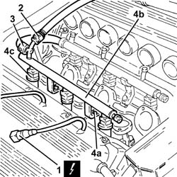

1056B66 l/h fuel manifold pipe, with injectors - r + r
- Path
- Procedures > 10 ENGINE > 1056 PETROL INJECTION SYSTEM > 1056B multi-point injection system (mpi) > 1056B66 l/h fuel manifold pipe, with injectors - r + r
- Kind
- repair procedure (removal / refitting; the operation number is the code)
- Applies to
- engines: 3.2 V6; all production periods
- Interactive page
- https://sloeber94.github.io/elrnDB-a147/en/#/3024976
Applies to: engines: 3.2 V6; all production periods
 Removing
Removing
 Refitting
RefittingEnsure that the ignition key is in the OFF position, then disconnect the negative battery terminal (-).
 | Name | Connector |
|---|---|---|
- | Battery |
Discharge the fuel system pressure with the tool connected to the bleed valve on the left fuel pipe.
 | Name | Country |
|---|---|---|
- | Rapid connector | 1.870.684.000 |
1. Disconnect the electrical connections from the left injectors.
| Name | Connector |
|---|---|---|
1 | Injector |
2. Disconnect the quick-release connector for the front fuel supply pipe, fuel pipe side.
3. Disconnect the rapid connector from the right fuel manifold pipe to the left one.
Avoid working with the engine hot under all circumstances;
Never use tools such as pliers, screwdrivers, etc. under any circumstances;
If it is released, rotate the rapid connector cover before acting on the release buttons;
Check its condition (deformation/breakage of retaining lugs, release buttons) before reconnecting it;
After re-engageing the rapid connector, check that it is correctly attached by pulling it;
At the end of fitting, check that there are no fuel leaks by starting up the engine again;
If there is damage to the rapid connector, replace the complete right pipe.
4. Undo the bolts (4a) and remove the left fuel manifold pipe (4b) complete with injectors (4c).

Applies to: engines: 3.2 V6; all production periods
Refitting
RemovingPlace the left fuel manifold pipe, complete with injectors, back in its housing and fix it using the bolts.
Connect the rapid connector connecting the right fuel manifold pipe to the left one.
Connect the quick-release connector for the front fuel supply pipe, fuel pipe side.
Connect the electrical connections to the injectors.
Connect the negative (-) battery terminal.